colimit in a coslice category
1. Proposition
Let  be a (sufficiently) cocomplete category,
be a (sufficiently) cocomplete category,
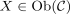
an object. Suppose is an indexing category,
is an indexing category, 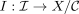
a coslice-category valued functor.Then the colimit in
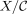
is given by the colimit of the diagram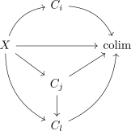
in after adding the morphisms
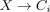
and then taking the induced morphism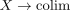
as object.
2. Proof
Suppose there exists an object
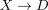
and a natural transformation from to the constant diagram functor 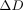
, i.e. a diagram of the form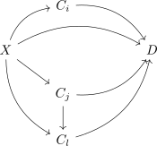
Then there exists an induced morphism
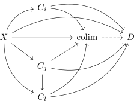
2.1. commuting
note that especially
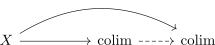
commutes.
Therefore the morphism is welldefined in .
Analagously each triangle commutes, thus the induced morphisms form a diagram
2.2. uniqueness
Suppose there exists two morphisms
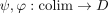
making the diagram commute in . Then especially the diagram in commutes.
Thus it follows by universal property that the morphisms
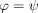
are equal
see also: